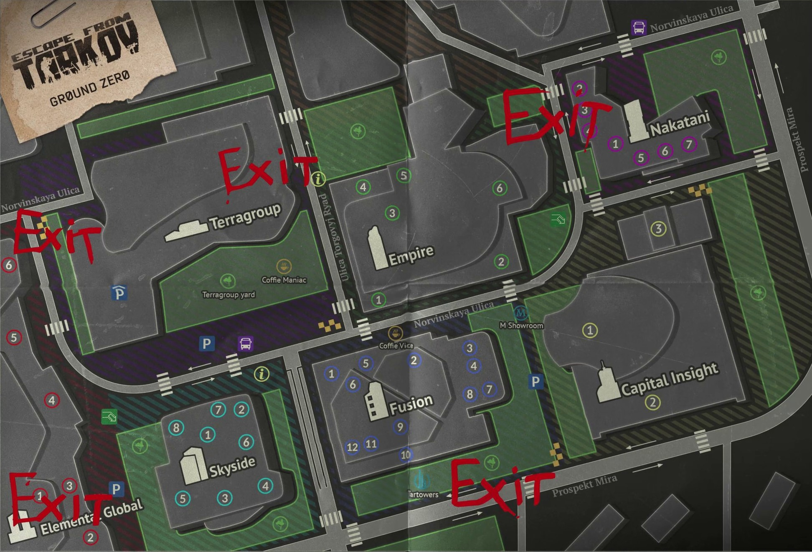

«Эпицентр».
Дата добавления: 27 декабря 2023 года.
Версия: 0.14.0.0
«Эпицентр» была добавлена в игру с выходом масштабного патча 0.14.0.0 27 декабря 2023 года, который также сопровождался вайпом (обнулением прогресса всех игроков) .
Описание и концепция карты
Эпицентр представляет собой квартал в центре Таркова с плотной городской застройкой и большим количеством инфраструктурных зданий.
Главная отличительная особенность карты — её целевое назначение. На момент добавления «Эпицентр» был создан как обучающая локация для новичков, доступная только игрокам 1-20 уровня . Более прокачанные бойцы (20+ уровней) не могли попасть на эту карту, при этом для Диких ограничений не было .
По задумке разработчиков, «Эпицентр» должен был стать сюжетным объяснением того, как бойцы ЧВК USEC и BEAR оказались отрезанными от внешнего мира и остались сами по себе в неспокойном регионе .
Планы развития
Согласно планам студии Battlestate Games на 2024 год, анонсированным в подкасте TarkovTV, «Эпицентр» должен был перестать быть «лягушатником» только для новичков. Разработчики планировали внедрить систему раздельного матчмейкинга: игроки с уровнем ниже 20 попадают в рейды только с такими же новичками, а все, кто поднялся выше 20-го уровня, играют на «Эпицентре» отдельно . Это не касается других карт.
